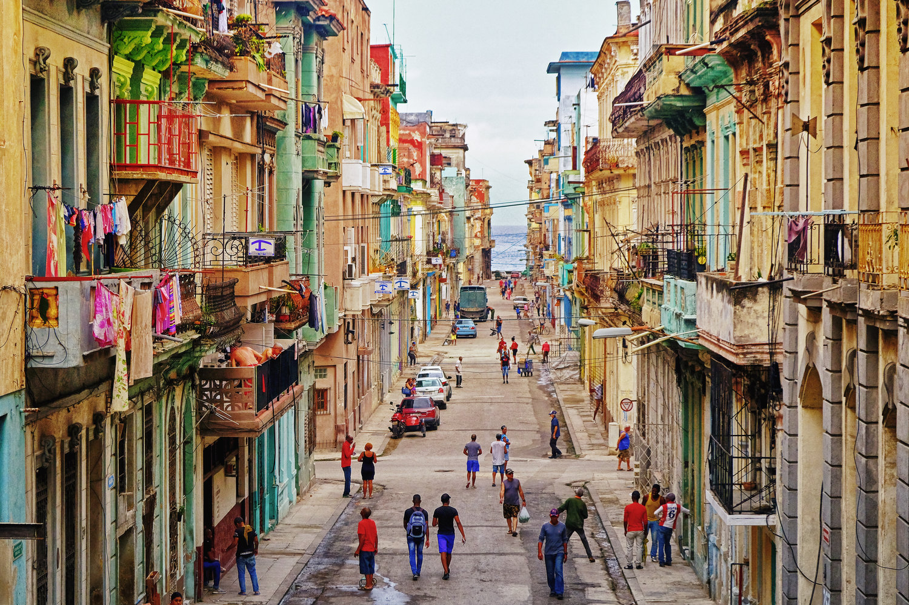
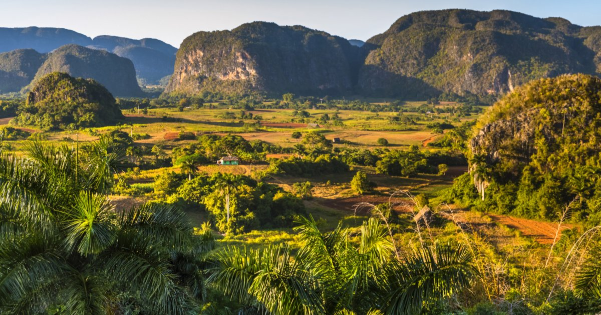

Why Visit Cuba?
Cuba beckons with a blend of vibrance and nostalgia that few places can match. Imagine wandering the cobbled streets of Havana, where Spanish colonial buildings glow in pastel hues and every balcony hums with history. Beyond the cities, lush valleys, pristine beaches, and protected biosphere reserves reveal a land where nature still thrives untouched.
But it’s the rhythm of Cuban life that truly captivates—salsa echoing in the plazas, spontaneous dancing in the streets, and soulful sounds spilling from cafés at sunset. You'll witness a resilient spirit woven through its museums, revolutionary landmarks, and the warm hospitality of its people.
Whether you're sipping coffee in a centuries-old courtyard, exploring coral reefs, or learning a few dance steps from locals who move like the music lives inside them, Cuba offers not just a vacation—but a full-body experience of culture, connection, and joy.
Come for the sights. Stay for the soul.

Did You Know?
UNESCO has recognized nine Cuban sites as World Heritage Sites, including Old Havana and the Viñales Valley, each chosen for their exceptional cultural or natural significance. These sites span centuries of history and ecological richness—from the Archaeological Landscape of the First Coffee Plantations in the southeast, which reveals Cuba’s 19th-century agricultural legacy, to the Alejandro de Humboldt National Park, home to one of the most biologically diverse ecosystems in the Caribbean.
Other highlights include the Historic Centres of Trinidad, Camagüey, and Cienfuegos, each showcasing distinct colonial architecture and urban planning, and Desembarco del Granma National Park, where dramatic coastal cliffs meet revolutionary history.
✨ Learn more about these remarkable destinations, their stories, and how to visit them on our website. Your Cuban adventure starts with discovery!
